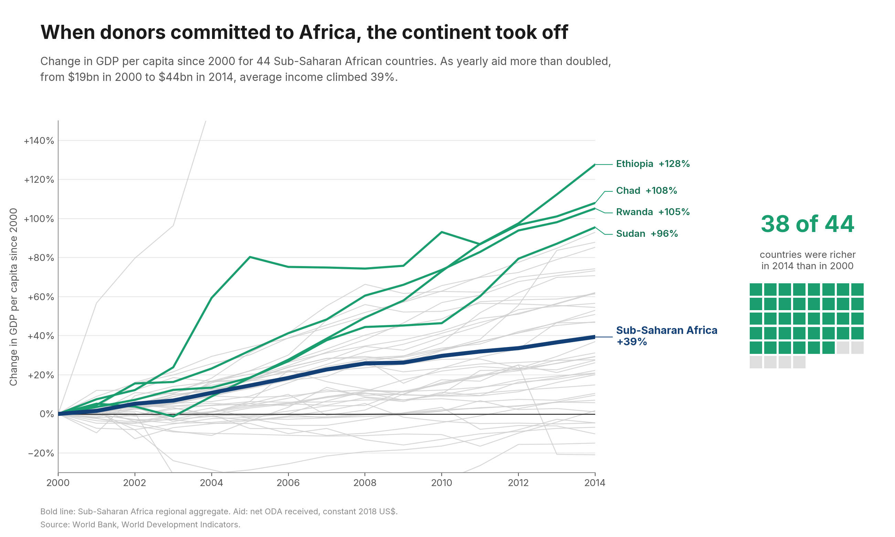
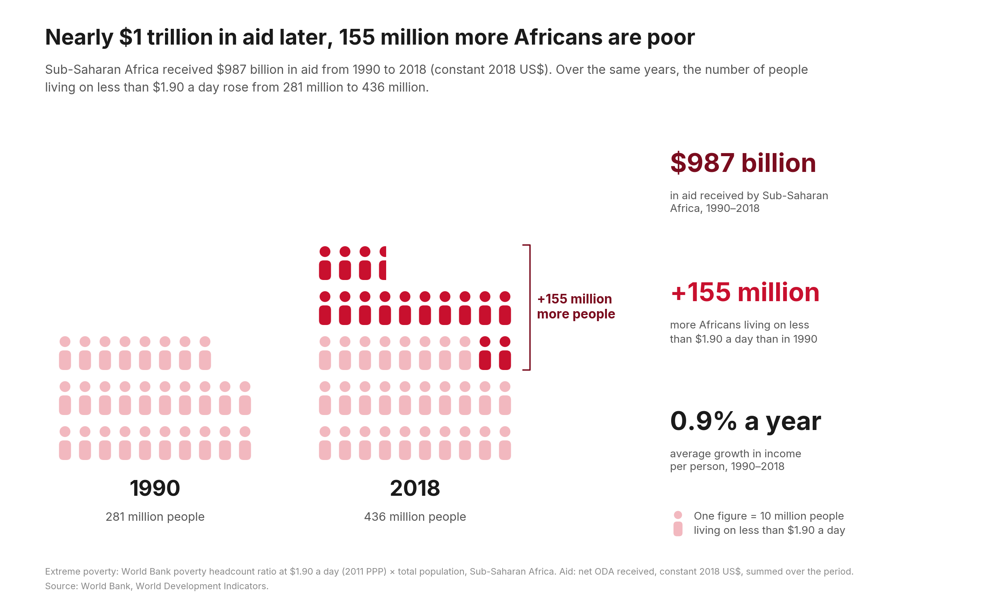

Proposition: Foreign aid has stimulated economic growth in Sub-Saharan Africa.
Data. World Bank World Development Indicators, 1960–2020: GDP per capita (constant 2010 US$), net official development assistance (ODA) received in constant 2018 US$ and as a share of gross national income (GNI), the poverty headcount ratio at $1.90 a day (2011 PPP), and total population. The FOR chart follows 44 Sub-Saharan African countries through time; the AGAINST chart counts the region's people living in extreme poverty. Event dates come from the UN Millennium Declaration (September 2000) and the G8 Gleneagles communiqué (July 2005).
Scores run from −2 fully deceptive to +2 fully earnest.
FOR the Proposition

Design Decisions and Rationale:
- −2 Time window: 2000 to 2014. Initially, we decided to use the full timeline of 1990-2019. However, the increase was a lot more ambiguous as the 1990s decline flattened the graph, which makes our proposition less credible. We then decided to make 2000 our starting year because it lines up with the Millenium Development Goals and is the bottom of a 25-year slump. This makes the starting year seem more natural than just cherry-picking.
- +1.5 Indexing all 44 countries to their 2000 level and drawing every one. Our graphic puts all economies onto a similar starting scale by indexing them all to their economic level in 2000. Drawing every line allows the reader to see all of the data that went into the trend line and makes it transparent how we selected which to highlight. It shows the reader that the data is not cherry picked to an extreme extent, and helps them believe that the data applies to more than just the highlighted countries.
- −0.5 Marking dates of aid-pledging events. Our graphic highlights specific dates and events where richer nations pledge aid to Sub-Saharan Africa. These work as our form of proof that aid is what is driving the economic growth shown in the graph. This also leaves out plenty of context, which is what makes it lean deceptive. These markings make no indication of how much aid is pledged, or to which programs or specific countries they were pledged too. It is possible that the growth is unrelated to these specific events.
- -1 Green highlights and a suggestive title. Our visualization highlights the countries with the fastest growth (Ethiopia, Chad, Rwanda, Sudan) in green to convey our proposition positively. Two of the 4 countries are also oil exporters, something not explicitly included on the visualization. Keeping the other countries gray allows us to lead viewers to generalize/believe in a 90%+ growth in GDP for Sub-Saharan African countries overall. The title “When donors committed to Africa, the continent took off” is suggestive of causation, placing aid first and growth second.
AGAINST the Proposition

Design Decisions and Rationale:
- +1.5 Pictogram of people instead of a chart of rates. The figures in our visualization each uniformly account for 10 million people in Sub-Saharan Africa, with partial figures representing the remainder. The visualization encoding is accurate and quantifiable. The two blocks grow upward like bars, and the people added since 1990 are the only strong color on the page, so the point lands in a second. Each of those figures is a crowd of 10 million real people, and by 2018 there are visibly more of them. We stopped at the 2018 comparison to highlight the large difference.
- −2 Counting people instead of showing the poverty rate. Our graphic counts the raw number of people living in poverty, instead of showing the rate as you would expect. This completely disregards the fact that the poverty rate has actually decreased by around 15% during this time period. The raw number creates the idea that the poverty problem has gotten worse, when by most metrics it has not. This is the most deceptive part of the graph, but I wouldn't say it is obviously noticeable to the reader.
- −1.5 Aid as a 29-year total, rounded up in the headline. The total aid received in Sub-Saharan Africa is $987 billion. This was calculated by adding up every year of aid from 1990 to 2018. Per person, it averages about $44 a year, roughly 12 cents a day, set against a poverty line of $1.90 a day. But by rounding the aid amount up to a trillion, instead of in billions, it creates a bigger impact on the reader. We initially chose to use per person, but the statistic was a small amount compared to the cumulative, which could undermine the amount of aid given.
- −1.5 Switching the outcome from growth to poverty. The original proposition is about growth, and is argued through GDP in the first graphic. The rebuttal in this graphic switches the focus onto the poverty rate, which is more compelling and has more drastic data, but is deceptive. Picking and choosing which data to use is a form of deception that is common, but not quite earnest.